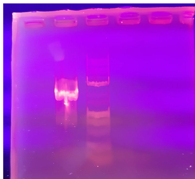

Генетичні асвекти формування антибіотикорезистентності
Загальновідомою та глобальною є проблема не чутливості мікроорганізмів до антибіотиків. За даними Всесвітньої організації охорони здоров'я щорічно 23 000 людей на планеті помирає внаслідок резистентності мікроорганізмів до антимікробних препаратів.За таких умов, актуальним є дослідження шляхів циркуляції антибіотикостійких мікроорганізмів та ролі води й водних екосистем у поширенні як антибіотикорезситентних бактерій, так і генетичних факторів резистентності –R-плазмід.їх широкого нераціонального застосування, їх безрецептурного продажу, самолікування, застосовуання в сільському господарстві, харчовій промисловості та ветеринарії.
Дослідження
Для дослідження R-плфзміди потрібно:
Виділення ДНК
Ампліфікація
Аналіз фрагменту у гель-електрофорезі